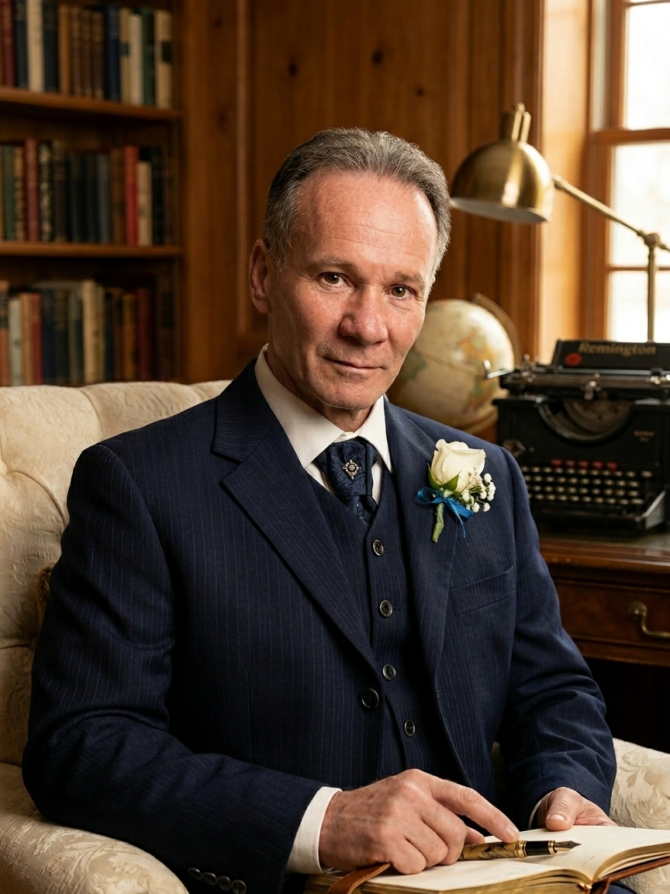

Michele Bottino
Scrittore e saggista italiano. Un percorso che unisce esperienza professionale, attività investigativa, interesse per criminologia e scienze forensi, impegno sociale, scrittura e ricerca storico-documentaria.

Scrittore, saggista e autore italiano.
Michele Bottino, nato a Catania nel 1972, ha sviluppato un percorso che attraversa esperienze professionali, attività investigativa, interesse per la criminologia e le scienze forensi, impegno sociale, giornalismo, narrativa e ricerca storico-documentaria.
Prima di dedicarsi alla scrittura presta servizio come sottufficiale nella Marina Militare Italiana. Conclusa l’esperienza militare, intraprende l’attività di investigatore privato, occupandosi in particolare di persone scomparse e di altre materie investigative, maturando esperienze anche in collaborazione con le Forze dell’Ordine. Successivamente opera anche nell’ambito della sicurezza.
L’esperienza investigativa alimenta un interesse sempre più strutturato per la criminologia e le scienze forensi. Fonda un gruppo di studio dedicato alla criminologia, sviluppato attraverso il confronto multidisciplinare e la collaborazione di professionisti, tra cui psicologi forensi. Nello stesso contesto aderisce all’ICAA – International Crime Analysis Association.
Parallelamente sviluppa attenzione verso problematiche sociali, in particolare le persone scomparse, la tutela dei minori e le diverse forme di violenza e sfruttamento. Collabora con realtà associative impegnate in questi settori e svolge attività di ricerca sul web, contribuendo alla segnalazione alle autorità competenti di situazioni ritenute meritevoli di approfondimento.
A questa fase appartiene anche l’attività giornalistica dedicata a casi di cronaca. Partecipa inoltre a differenti esperienze e progetti sul web, comprese collaborazioni nell’ambito di iniziative alle quali è legato il nome dello scrittore Carlo Lucarelli.
Nel 2013 riceve in Brasile un riconoscimento honoris causa in Diritti Umani, conferitogli a seguito di una collaborazione e di un lavoro di carattere umanistico.
Dal 2016 il suo percorso assume una dimensione propriamente editoriale. Tra i primi lavori figurano G.P.G. – I fantasmi della notte e Scomparsi – Il commercio della vergogna. Nel 2018 pubblica Per tutta la mia vita e Il deposito delle anime – Dietro l’ombra dell’occupante. Negli anni successivi la produzione si amplia attraverso narrativa e saggistica, con opere tra cui L’Enigma dei Templari – Alla scoperta del Segreto Siciliano, Intrighi Invisibili, L’Uomo Consapevole, EUROPA: Anatomia di un crimine e Oniro – Dove la realtà si dissolve.
La sua attività autoriale si estende anche alla scrittura di testi destinati alla musica. Progressivamente assume un ruolo centrale la ricerca dedicata alla Sicilia e, in particolare, alla storia del territorio di Calatabiano. Con Calatabiano Sacra – Il mistero della luce sull’acqua e gli studi successivi, l’analisi storica e documentaria diventa una componente autonoma della sua produzione.
Il lavoro diretto sulle fonti conduce Bottino verso un approccio sempre più sistematico: documenti d’archivio, manoscritti, registri, repertori, fonti bibliografiche e risorse digitali vengono confrontati cercando di conservarne provenienza, contesto, varianti e differenti livelli di attendibilità.
Da questa esperienza prende forma una metodologia di ricerca fondata sulla verificabilità e sul controllo incrociato delle evidenze, successivamente formalizzata attraverso l’Integrated Archival Analysis System — Metodo Bottino — e ulteriori sviluppi metodologici. Alla base vi è un principio essenziale: distinguere ciò che una fonte dimostra da ciò che può soltanto suggerire, mantenendo riconoscibili dato, interpretazione e ipotesi.
Oggi Michele Bottino concentra la propria attività sulla scrittura e sulla ricerca storico-documentaria, con particolare attenzione alla storia siciliana, alla documentazione relativa al territorio di Calatabiano e allo sviluppo di metodologie per l’analisi critica e verificabile delle fonti.
Autore del metodo e docente del Corso Base
Michele Bottino è autore del Bottino Method e autore e docente del relativo Corso Base. Il percorso didattico traduce in forma introduttiva e operativa principi di verifica delle informazioni, valutazione delle fonti, tracciabilità delle evidenze e controllo degli output prodotti mediante intelligenza artificiale.
Il Bottino Method — Corso Base, Release 1.0, è pubblicato su Zenodo con DOI 10.5281/zenodo.23198223. La pubblicazione documenta il corso e i relativi materiali; non costituisce, di per sé, accreditamento accademico o professionale.